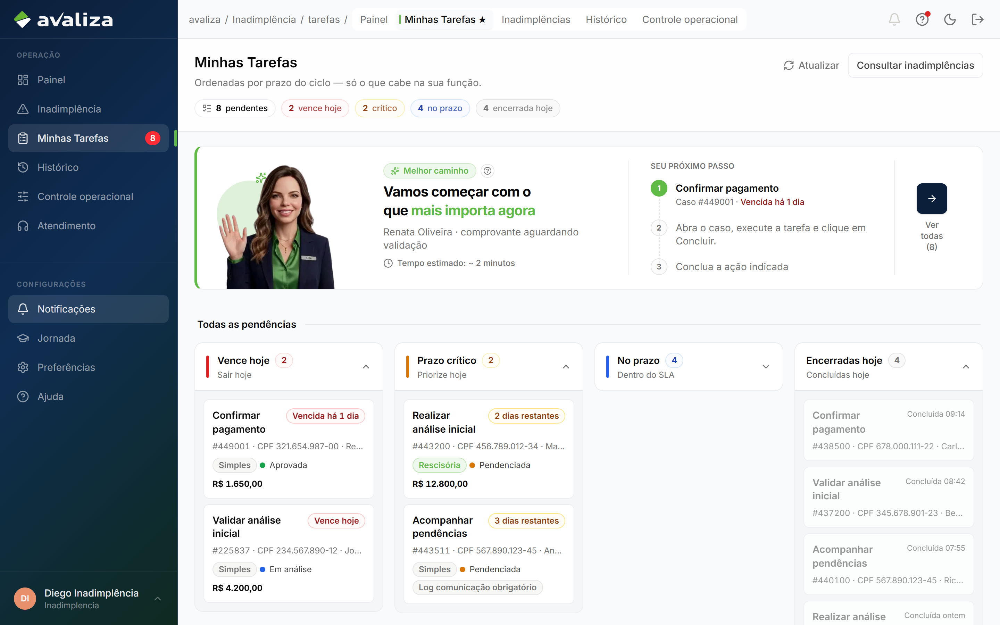
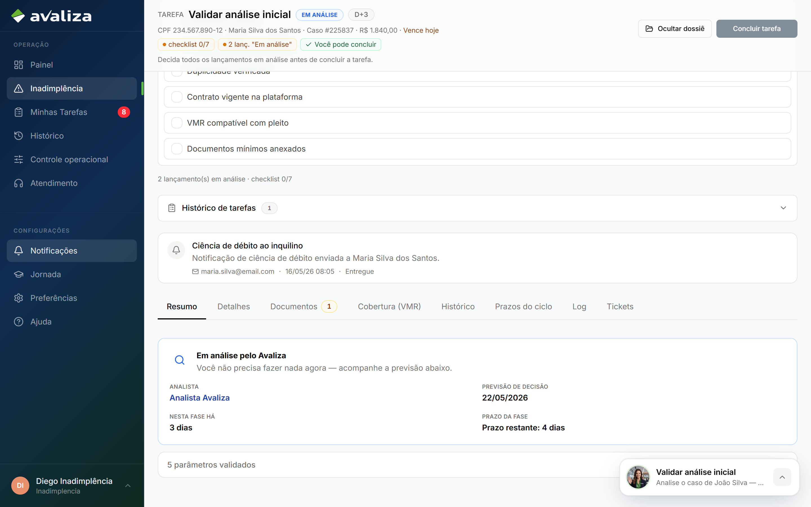
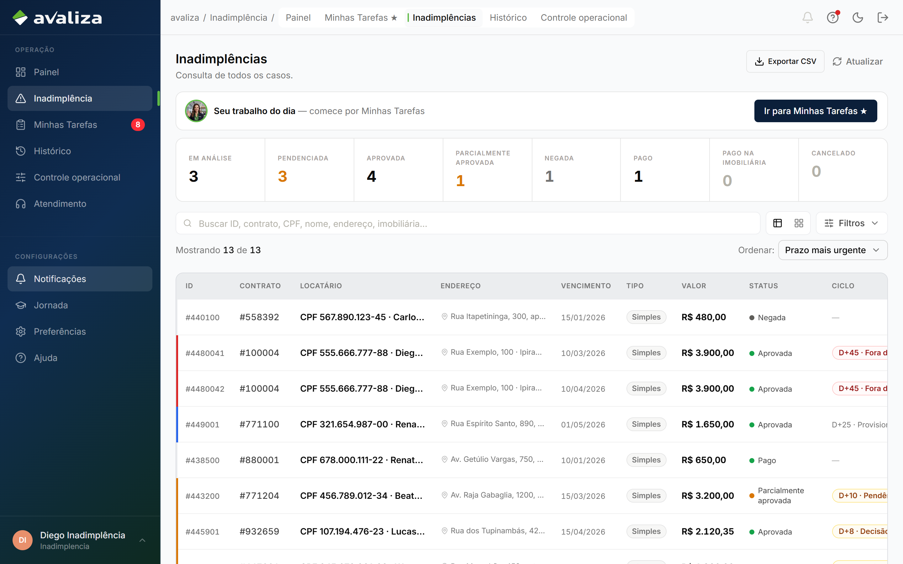
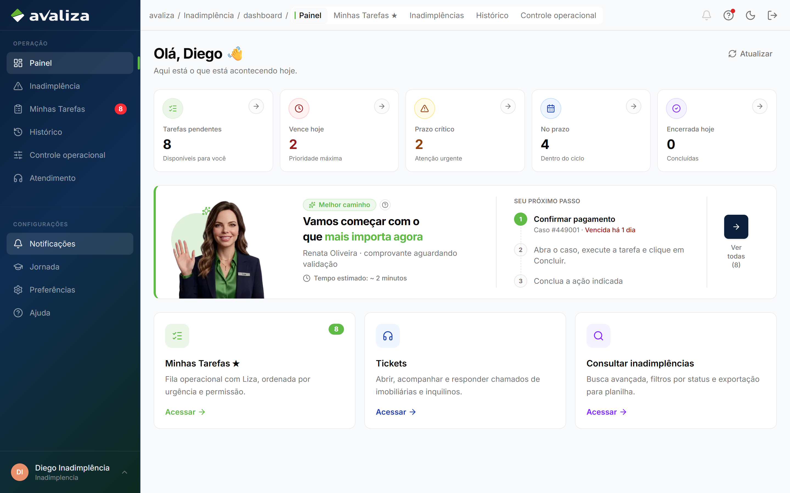
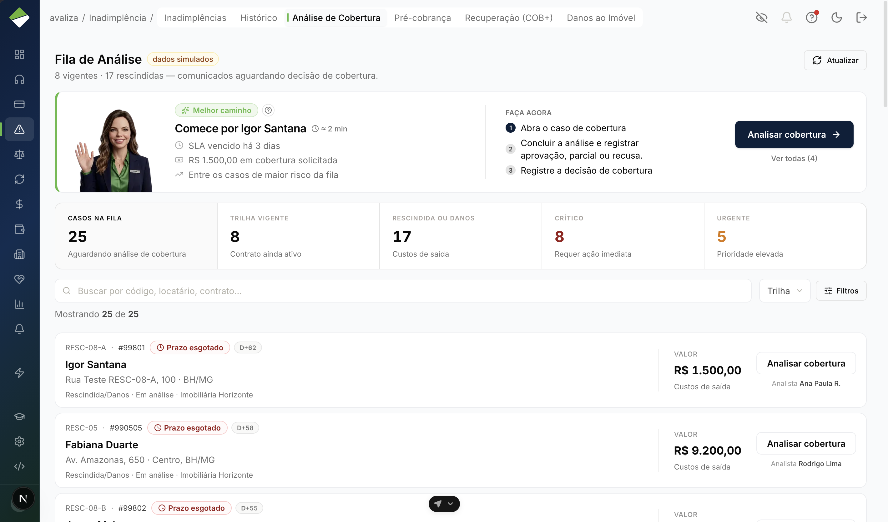
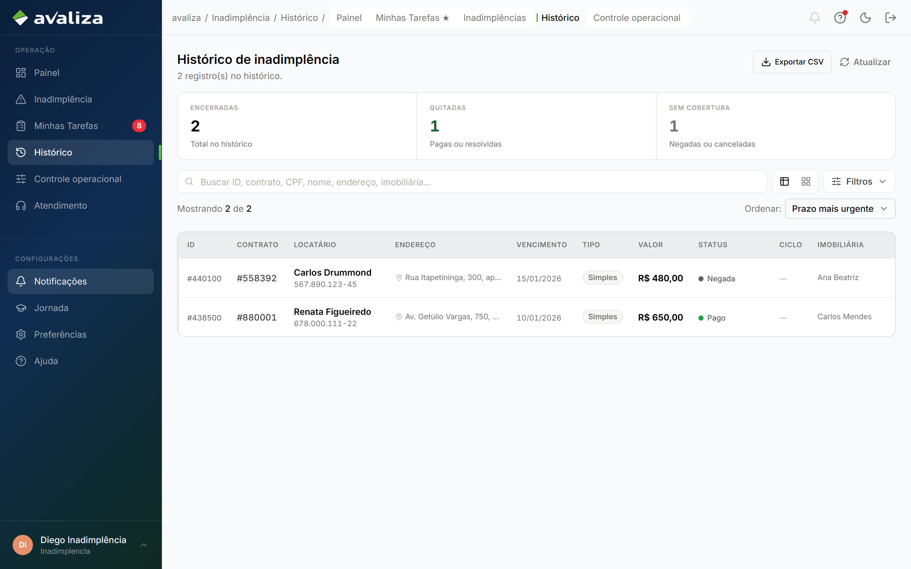
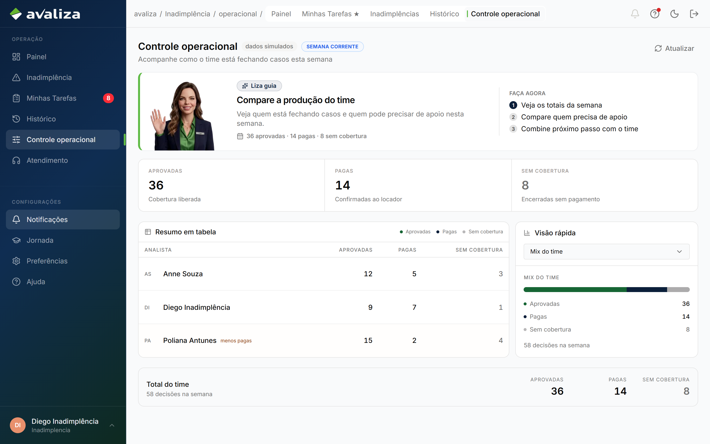
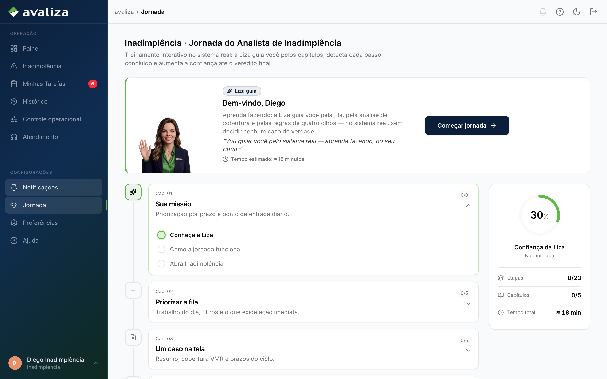

Você analisa os casos enviados para o setor e decide o tratamento da cobertura.
Seu papel
Seu trabalho começa quando um caso chega à sua fila e termina quando a análise é concluída ou o caso segue para o próximo responsável.
Você decide se a cobertura cabe, em que valor, ou se falta documento.
Você não abre o comunicado pela imobiliária.
Você não realiza o pagamento da indenização.
Você não conduz o processo jurídico.
Onde começo meu dia?
Minhas Tarefas
É a sua fila. O sistema já separa o que precisa da sua atenção — não é preciso vasculhar a listagem geral para descobrir o que trabalhar.
Minhas Tarefas
Sua home operacional. No menu: Painel, Minhas Tarefas ★, Inadimplências, Histórico e Controle operacional.
Tela de trabalhoPróximo passo: abrir o primeiro casoOrdenada por prazo
A fila já considera o prazo de cada caso. No topo, a Liza destaca o mais urgente. Comece por ele e siga a ordem: Vence hoje, depois Prazo crítico e, por último, No prazo — salvo orientação operacional específica.
avaliza.app/inadimplencia/tarefas

Minhas Tarefas — a fila do seu dia
O que cada card mostra
São os dados da tarefa — o que você usa para saber o que fazer, em qual caso e com que urgência.
No card
O que é
Nome da tarefa
O trabalho da vez: Validar análise inicial, Acompanhar pendências, Confirmar pagamento etc.
Nº do caso · locatário · contrato
Qual inadimplência abrir. O locatário aparece como CPF na frente do nome (ex.: CPF 234.567.890-12 · Maria Silva). O endereço do imóvel entra no card e no cabeçalho do caso.
Resumo
Linha curta com o contexto (nome e valor, ou “aguardando imobiliária”).
Tipo
Simples ou Rescisória — muda o tipo de débito, não o lugar onde você trabalha.
Status do caso
Em análise, Pendenciada, Aprovada etc. — o estado do caso, não o nome da tarefa.
Prazo
Vence hoje, 2 dias restantes, vencida há X. Define o grupo da fila.
Valor
Quando houver (pedido ou valor em análise).
Avisos / tags
Quando existirem — por exemplo, um alerta extra no card.
Clique no card: o caso abre já na tarefa da vez. A listagem Inadimplências serve para consultar a carteira — não escolha o próximo caso por lá.
Analisar um caso
Esta é a atividade central. Você abre o caso pela fila, percorre as abas, registra a decisão em cada lançamento e conclui a tarefa.
Abra o caso pela sua fila
Clique no card em Minhas Tarefas. O caso abre já com a tarefa da vez.
Percorra as abas
Resumo, Detalhes, Documentos (ou Checklist danos), Cobertura, Histórico, Prazos, Log. Cada aba tem um papel — a lista completa está na seção seguinte.
Complete o checklist e decida cada lançamento
Sete itens manuais + uma decisão por linha (Aprovar, Parcial, Reprovar, Pendenciar). Ao pendenciar, você escolhe o que falta — inclusive a notificação de ciência do débito. Sem isso, Concluir fica bloqueado.
Conclua a tarefa
A barra no rodapé mostra o que ainda falta (checklist, lançamento, contato no Log, comprovante…). Quando os chips estiverem ok, clique em Concluir.
Checklist de análise (obrigatório nas 3 conferências)
São 7 itens manuais. Sem 7 de 7, a tarefa de análise não fecha. Isso é diferente do painel de conformidade, que o sistema calcula sozinho (Cláusula Avaliza, assinaturas, prazo — apurado no servidor).
Nem todas aparecem o tempo todo. O conjunto muda com o status do caso. Log e Tickets só existem para analista interno.
avaliza.app/inadimplencia/225837

Detalhe atual do caso #225837 — abas no topo
Aba
Para que serve
Quando aparece
Resumo
Estado do caso, tarefa ativa, valor, prazo e sinais automáticos (prazo, cobertura, CPF, contrato vigente). Se algo bloquear, o aviso aparece aqui. Número no badge = parâmetros com falha.
Quase sempre. Some só quando o caso já está Pago ou Pago na imobiliária. Com tarefa aberta, esta é a aba inicial.
Detalhes
Dossiê: locatário (CPF na frente do nome, telefone), endereço completo do imóvel e cobertura, plano, contrato, data de abertura. Bloco de valores: solicitado, aprovado, lançamentos, saldo de cobertura. Para analista interno, o log das analistas (movimentação e comunicação) também aparece nesta aba.
Sempre. Em caso já pago, vira a aba inicial.
Documentos
Arquivos anexados, com status pendente, aprovado ou rejeitado, e preview. Na pendência, cada item pedido vira um slot (boleto, extrato, notificação de ciência do débito ao inquilino). A imobiliária/locatário devolve o arquivo por aqui.
Em análise, pendenciada, retorno recebido, aprovada e parcial. Some em negada e nos casos já pagos. Não aparece na trilha de danos — aí entra Checklist danos no lugar.
Checklist danos
Substitui Documentos na trilha de danos. A imobiliária envia item a item da matriz; você valida cada um.
Só em caso de cobertura de danos. Em pendência, abre nesta aba.
Discriminativo
Competências e valores que vão ao pagamento, depois que a cobertura já foi aceita. Badge se estiver em revisão.
Só depois de Aprovada ou Parcialmente aprovada.
Cobertura (VMR)
Teto do contrato, o que já foi usado e o saldo por tipo (aluguel, condomínio, IPTU, consumo, danos). Se o pedido passar do disponível, há alerta — isso não recusa o caso sozinho; existe aprovação parcial.
Sempre.
Histórico
Linha do tempo: abertura, decisões, retornos, mudanças de status.
Sempre.
Prazos do ciclo
Marcos de prazo do caso e da tarefa (o que já venceu, o que ainda cabe).
Sempre.
Log
Duas listas: movimentação do caso e comunicação com a imobiliária. Você registra contato (telefone, e-mail, WhatsApp, presencial ou outro). Nas tarefas de pendência, é preciso ao menos um registro para concluir.
Só para analista interno.
Tickets
Chamados ligados ao caso. Badge = tickets abertos. Não é aqui que se decide cobertura.
Só para analista interno.
Como usar as abas no dia a dia
Comece no Resumo
Leia o estado, a tarefa e os avisos. Se um parâmetro estiver vermelho, resolva ou pendencie antes de aprovar.
Confira Detalhes e Cobertura
Bata o pedido com o saldo VMR. Pedido maior que o teto → alerta; você decide parcial ou reprovação.
Documentos ou Checklist danos
Arquivo rejeitado (ilegível, incorreto, incompleto, vencido, sem assinatura) pede pendência, não aprovação.
Decida nos lançamentos
A decisão fica na tela de trabalho, linha a linha — não numa aba “Decisão”. A observação da linha (Obs.) aparece em texto de leitura, não como nota apagada.
Log nas pendências
Sem contato registrado, Concluir não libera em Enviar / Acompanhar pendências.
Discriminativo depois
Só olhe depois de aprovado: é o recorte que o Financeiro usa para pagar.
Todas as tarefas
Existem 9 tipos. As 5 primeiras são suas. As 4 de pagamento são do Financeiro — você vê no mesmo caso, mas não conclui no lugar deles.
A fila é compartilhada por permissão: ao concluir, a próxima tarefa fica disponível para quem pode executá-la. Não há dono atribuído à mão. Quem fez a 1ª análise não valida a 2ª — o sistema bloqueia.
Suas tarefas
Sua tarefa1ª conferência
Realizar análise inicial
Quando aparece
O caso chegou à Avaliza e ainda não teve a primeira conferência.
O que fazer
1) Revise o checklist de análise. 2) Decida todos os lançamentos pendentes. 3) Conclua quando tudo estiver certo.
Validar análise inicial — mesma tela, segunda pessoa
Sua tarefa3ª conferência
Confirmar resultado da análise
Quando aparece
Depois da validação. Também volta mais adiante no prazo do caso (reanálise).
O que fazer
1) Valide checklist e lançamentos. 2) Confirme o resultado final. 3) Conclua a 3ª camada.
Para concluir
Checklist 7/7 + lançamentos decididos + permissão de confirmar.
O que acontece depois
Se aprovado (ou parcial): o caso segue para o Financeiro provisionar o pagamento. Se pendenciado: imobiliária/portal. Se negado: encerra sem pagamento.
Confirmar resultado — o caso ainda está Em análise nesta camada
Sua tarefaPendência
Enviar pendências
Quando aparece
Falta documento ou data, e alguém do setor precisa orientar a imobiliária.
O que fazer
1) Revise o que falta na documentação. 2) Oriente a imobiliária. 3) Conclua após o envio orientado.
Para concluir
Registrar ao menos um contato na aba Log (telefone, e-mail, WhatsApp, presencial ou outro).
O que acontece depois
O caso continua pendenciado. A imobiliária (e o locatário no portal, quando couber) recebem o pedido. Quando a resposta chegar, volta para análise com “Retorno recebido”.
Sua tarefaPendência
Acompanhar pendências
Quando aparece
O caso já está pendenciado e precisa de cobrança enquanto espera resposta.
O que fazer
1) Entre em contato com a imobiliária. 2) Registre o contato na aba Log. 3) Conclua quando houver registro.
Para concluir
Pelo menos 1 contato no Log. Sem isso, o botão fica bloqueado (“Falta registrar contato”).
O que acontece depois
Acompanhar não encerra o caso. Encerrar a pendência é a resposta chegar — aí o caso volta para a sua análise.
Tarefas do Financeiro (você vê, não conclui)
Aparecem no mesmo detalhe do caso depois da aprovação. Quem analisa cobertura não confirma o pagamento — o sistema separa as permissões.
FinanceiroVocê consulta
Provisionar pagamento
Quando aparece
Cobertura aprovada (ou parcial). É a primeira tarefa do pagamento da indenização.
O que o Financeiro faz
1) Confere a data prevista do repasse. 2) Informa a data de pagamento. 3) Conclui o provisionamento.
Para concluir
Data de pagamento preenchida + permissão financeira.
O que acontece depois
Abre Confirmar pagamento.
Se o valor estiver errado
Devolvem o caso para você reanalisar. Eles não pagam um valor diferente por conta própria.
O print é a tela seguinte: provisionar só informa a data; o comprovante entra em Confirmar pagamento.
Confirmar pagamento da exoneração — mesmo gesto: anexar comprovante
Qual decisão tomar?
Você decide lançamento por lançamento. Os botões na linha são: Aprovar, Parcial, Reprovar e Pendenciar. Em multa rescisória, também aparece Calcular multa.
Aprovar
Quando usar
Quando aquele lançamento deve ser coberto pelo valor pedido.
O que o sistema exige
Um clique na linha. A linha deixa de ficar “Em análise”.
O que acontece depois
O valor segue no caso. Se todas as linhas forem aprovadas e as conferências concluídas, o caso vai para o Financeiro pagar a indenização.
Critério jurídico do “quando cabe cobertura” — a validar com a operação. O sistema não descreve a regra legal; só registra a sua decisão.
Aprovar parcialmente
Quando usar
Quando a linha deve ser coberta, mas por um valor menor que o pedido — por exemplo, quando o pleito passa do disponível.
O que o sistema exige
Valor maior que zero e menor que o pleiteado, mais justificativa (mínimo de 10 caracteres).
O que acontece depois
O caso pode ficar como parcialmente aprovado. O Financeiro paga o valor aprovado, não o pedido original.
Se o pedido passa do teto de cobertura, o sistema alerta — não recusa sozinho. Cabe a você aprovar o que couber ou reprovar.
Reprovar
Quando usar
Quando aquele lançamento não deve ser coberto.
O que o sistema exige
Um clique na linha. No caso inteiro, motivos de negativa existem para situações como valor acima da cobertura, prazo encerrado, cobertura fora do plano, documentação insuficiente ou contrato sem cobertura ativa.
O que acontece depois
A linha sai da cobertura. Se o caso fechar como negado, não segue para pagamento.
Critério a validar com a operação: quando negar o caso inteiro versus pendenciar o que ainda é corrigível.
Pendenciar
Quando usar
Quando falta documento ou data, ou o que chegou está incorreto e ainda pode ser corrigido.
O que o sistema exige
Na linha, um clique em Pendenciar abre a lista de documentos a pedir (boleto, extrato, notificação de ciência do débito). Pelo menos um item. Na pendência do caso, descrição e prazo de resposta também são obrigatórios.
O que acontece depois
Os itens pedidos aparecem como slots na aba Documentos. O caso fica pendenciado. A imobiliária é orientada; o locatário pode enviar pelo portal de pendências. Enquanto espera, você acompanha. Quando a resposta chega, o caso volta para a sua análise — com o aviso de retorno recebido.
Não há um botão “Encaminhar ao Jurídico” na análise dos lançamentos. O Jurídico entra depois, quando o caso pede via de exoneração — em geral após a indenização, se o locatário não regularizou. Encaminhar não é conduzir o processo.
Despesas jurídicas (auto-aprovadas)
Custas processuais, honorários advocatícios e caução judicial não passam pelas três conferências. O Jurídico registra pelo caso ajuizado; o wizard IN2 abre com o tipo pré-selecionado e o comunicado segue aprovado automaticamente para o Financeiro.
Receber comunicado do Jurídico
Quando acontece
O analista jurídico registrou custas, honorários ou caução judicial a partir de um caso JR ajuizado ou em despejo.
O que você vê
Comunicado na Inadimplência com cobertura jurídica auto-aprovada — sem tarefa Realizar/Validar/Confirmar análise.
O que acontece depois
O Financeiro provisiona e confirma o pagamento. Você só consulta se precisar de contexto.
O que acontece depois
Depois de agir, o sistema move o caso. Você não precisa “entregar” o dossiê à mão.
Você aprova e as conferências fecham
↓
O caso segue para o Financeiro
↓
Eles informam a data e confirmam o pagamento. Volta para você só se o valor estiver errado.
Você pede documento
↓
Imobiliária e, quando couber, o locatário no portal recebem a solicitação
↓
Quando responderem, o caso volta para a sua fila
Você reprova e o caso fecha como negado
↓
Não há pagamento. O caso sai da sua fila de trabalho.
Você conclui uma conferência
↓
A tarefa some da sua fila. A próxima conferência aparece para quem tem permissão — outra pessoa, na validação.
Status que você vai encontrar
São os nomes que aparecem nos badges e na listagem — não os códigos internos.
Status exibido
O que significa
O que você precisa fazer
Em análise
O caso está sob análise da Avaliza.
Trabalhar pela sua fila: conferir e decidir.
Pendenciada
Falta documento ou informação.
Acompanhar. Orientar a imobiliária se essa for a sua tarefa.
Pendenciada · Retorno recebido
A resposta chegou e o caso voltou.
Reanalisar o que foi enviado.
Aprovada
Cobertura aceita. A análise neste setor acabou.
Nada a decidir. O Financeiro assume o pagamento.
Parcialmente aprovada
Parte do pedido foi coberta.
O Financeiro paga o valor aprovado.
Negada
Cobertura recusada.
Caso encerrado nesta fila.
Pago
A indenização foi paga.
Encerrado. Consulta no Histórico, se precisar.
Pago na imobiliária
Baixa operacional: o caso foi encerrado como pago na loja.
Encerrado. Tarefas pendentes daquele caso são concluídas automaticamente.
Cancelado
Aparece como filtro na listagem.
Consulta. Não é uma decisão desta tela de análise.
Na listagem você também vê recortes como Prazo crítico, Aprovadas e Encerradas — são filtros da carteira, não novas decisões.
Todas as telas do setor
Só o que existe hoje no menu da analista e no detalhe do caso. Abrir uma tela de consulta não avança o caso.
Menu da analista — onde você trabalha
Trabalho
Minhas Tarefas
Sua fila. Comece o dia aqui. Grupos: Vence hoje, Prazo crítico, No prazo; no fim, Encerradas hoje.
Inadimplência → Minhas Tarefas ★
avaliza.app/inadimplencia/tarefas
Minhas Tarefas
Trabalho
Detalhe do caso (aberto pela tarefa)
Onde você confere as abas, decide lançamentos e conclui. A URL traz o número do caso e, em geral, ?tarefa= com o tipo da vez.
Aberto a partir do card da fila
avaliza.app/inadimplencia/225837
Detalhe do caso — abas e status; a tarefa abre por cima desta tela
Menu da analista — onde você consulta
Consulta
Inadimplências
Carteira completa. Filtros: Em análise, Pendenciada, Prazo crítico, Aprovadas, Encerradas. Busca por contrato, locatário ou número. Não é a fila do dia — abrir um caso daqui é consulta, a menos que você já tenha tarefa nele.
Inadimplência → Inadimplências
avaliza.app/inadimplencia

Listagem da carteira
Consulta
Painel
Números do dia (volume, prazos, produção). Não substitui a fila: o próximo caso continua em Minhas Tarefas.
Inadimplência → Painel
avaliza.app/inadimplencia/dashboard

Painel do setor
Consulta
Fila de Análise
Board de cobertura: KPIs, Melhor caminho da Liza e cards por trilha (vigente vs rescindida/danos). Cada card leva ao caso. O analista trabalha por Minhas Tarefas — esta tela é recorte/auditoria, não substitui a fila do dia.
Inadimplência → Fila de Análise (admin/auditoria)
avaliza.app/inadimplencia/analise

Fila de Análise — board de cobertura
Consulta
Histórico
Casos já encerrados (pago, negado, cancelado, pago na imobiliária). Use para consultar o que já saiu da fila.
Inadimplência → Histórico
avaliza.app/inadimplencia/historico

Histórico do setor
Consulta
Controle operacional
Produção do time e gargalos (quem está com o quê, o que atravessou prazo). Só consulta — não decide cobertura.
Inadimplência → Controle operacional
avaliza.app/inadimplencia/operacional

Controle operacional
Treinamento — não é a fila do dia
Treino
Jornada
Tela de treinamento guiado pela Liza, no sistema real. Não avança caso, não decide cobertura. Detalhes na seção Jornada de treinamento.
Configurações → Jornada
Abertura do caso — tela da imobiliária, não da analista
Quem envia o comunicado é a imobiliária. O wizard tem três passos (tipo de débito, detalhes e documentos, revisão e envio). Não dá para abrir o mesmo tipo de débito com a mesma data de vencimento duas vezes no contrato — o sistema bloqueia na revisão. Seu trabalho começa quando o caso já está na fila como Realizar análise inicial. A analista não abre comunicado por aqui — o sistema redireciona para Minhas Tarefas.
Jornada de treinamento
Treino no sistema real, guiado pela Liza. Não é Minhas Tarefas e não substitui a operação do dia.
TreinoCerca de 15 minProgresso salvo
Esta tela não decide cobertura. A jornada pede que você abra filas e casos de verdade, mas as decisões críticas são mini-casos — você nunca registra aprovação, negativa ou validação real.
avaliza.app/jornada

Jornada do Analista de Inadimplência — capítulos, confiança e o botão para começar ou retomar
Onde fica e como usar
No menu: Configurações → Jornada. Título na tela: Inadimplência · Jornada do Analista de Inadimplência.
Começar jornada (ou Retomar jornada, se você já tinha começado) leva você às telas reais. A Liza acompanha cada passo e detecta sozinha quando você conclui.
A confiança começa em 30% e sobe até 100%. Ao terminar, a tela libera o certificado.
Pode pausar a qualquer momento: o progresso fica salvo e você volta por esta mesma tela.
Os cinco capítulos
A timeline à esquerda mostra o que vem a seguir. À direita, a barra de progresso (confiança, etapas, capítulos e tempo estimado).
Capítulo
O que você pratica
1. Sua missão
Por onde começar o dia e como a Liza prioriza por prazo.
2. Priorizar a fila
Minhas Tarefas, filtros e o que exige ação imediata.
3. Um caso na tela
Resumo, cobertura VMR e prazos do ciclo.
4. Decisões críticas
Triagem, quatro olhos e conformidade — em mini-casos, sem tocar em caso real.
5. Histórico e handoffs
Histórico, controle operacional, despesas jurídicas auto-aprovadas e quando o Jurídico assume.
Quando outro time assume
Você analisa a cobertura. O restante da operação continua com o dono de cada etapa.
Imobiliária
Entra antes de você: abre o comunicado e envia evidências. Durante a pendência, responde o que faltou.
Não decide cobertura.
Financeiro
Entra quando a cobertura já está aprovada (ou parcial). Informa a data prevista e anexa o comprovante da indenização — isso marca o caso como pago.
Se o valor estiver errado, devolve o caso para você. Não paga um valor diferente por conta própria.
Jurídico
Entra quando o caso pede via de exoneração. Conduz checklist e andamentos. Registra despesas processuais (custas, honorários, caução) — aprovadas automaticamente na sua fila.
Encaminhar o caso não é fazer a exoneração nem analisar cobertura de aluguel.
Locatário (portal)
Entra quando você pediu documento. Envia pelo link de pendências.
Enviar o arquivo devolve o caso para você — não decide cobertura.
Atendimento
Entra quando alguém abre um chamado. O ticket pode apontar para um caso seu.
Chamado não cobre inadimplência. A decisão continua no detalhe do caso.
De quem recebo e para quem passo
Em dez segundos: a imobiliária origina o caso; você decide; o destino depende da decisão.
ImobiliáriaAbre o comunicado
Portal do locatárioDevolve o documento
AtendimentoChamado vira contexto
enviam o trabalho ↓
InadimplênciaVocê analisa e decide
conforme a decisão ↓
Portal / imobiliáriaPendência de documento
FinanceiroCobertura aprovada
JurídicoVia de exoneração
Quando algo sair do fluxo esperado
Situações que o produto já trata. Se a tela bloquear, leia o motivo no próprio caso antes de procurar outro time.
Documento rejeitado ou incorreto
O arquivo aparece como rejeitado, com o motivo (ilegível, incorreto, incompleto, vencido, sem assinatura, entre outros).
O que fazer. Pendenciar e pedir a correção. Quando o novo arquivo chegar, o caso volta com retorno recebido.
Para quem passa. Imobiliária e, quando o pedido for ao locatário, o portal de pendências.
Caso que voltou depois da pendência
O badge pode mostrar Retorno recebido, ainda no status Pendenciada.
O que fazer. Reabrir pela fila e reanalisar o que foi enviado — não começa um caso novo.
Pedido maior que a cobertura disponível
A aba Cobertura alerta. O sistema não recusa o caso sozinho.
O que fazer. Aprovar o que couber (parcial) ou reprovar o que não cabe — conforme a análise.
Não consigo concluir a tarefa
Concluir fica bloqueado enquanto houver lançamento em análise, checklist incompleto ou falta de permissão. Nas pendências, falta registrar contato no Log. No pagamento (Financeiro), falta data ou comprovante.
O que fazer. Completar o que a própria barra da tarefa indica. Quem fez a primeira análise não valida a segunda — outra pessoa precisa concluir.
Pago na imobiliária
Baixa operacional quando o pagamento ocorreu na loja. O status passa para Pago na imobiliária e as tarefas pendentes daquele caso são concluídas. Tickets vinculados não mudam.
Quem faz. Você (Inadimplência). Isso é diferente de o Financeiro marcar o caso como pago com comprovante da indenização.
Financeiro devolveu o caso
A cobertura já tinha sido aprovada, mas o valor não fechou para o pagamento.
O que fazer. Rever a análise. O Financeiro não paga um valor diferente no seu lugar.
Chamado no Atendimento
Alguém tem dúvida ou bloqueio ligado ao caso.
O que fazer. Responder o ticket. A decisão de cobertura continua no detalhe do caso, não no chamado.
Caso já no Jurídico
A mesa de exoneração é do Jurídico. Você não reabre a análise de cobertura por ali.
O que fazer. Se precisar de contexto, consulte o caso. O andamento jurídico não é sua tarefa.